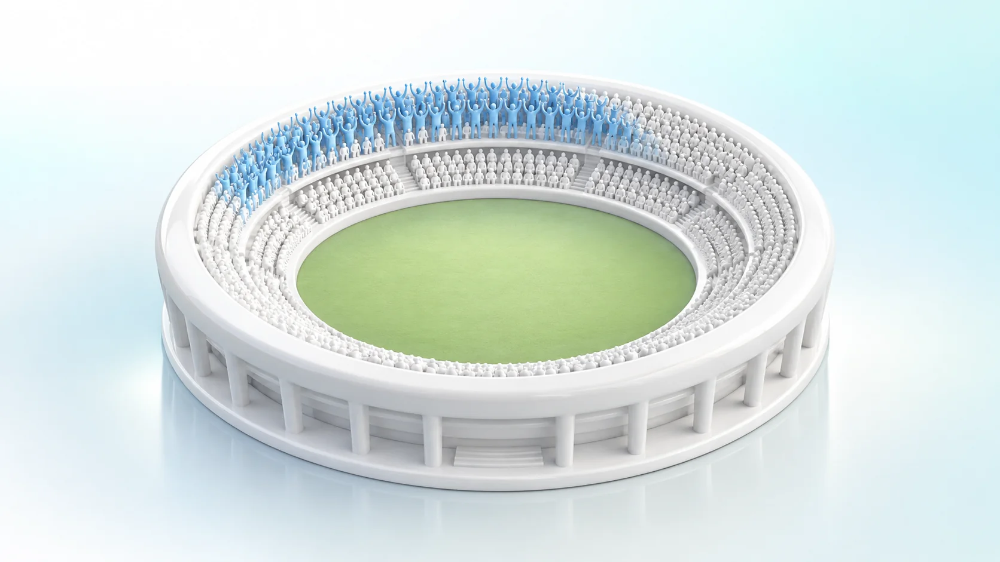
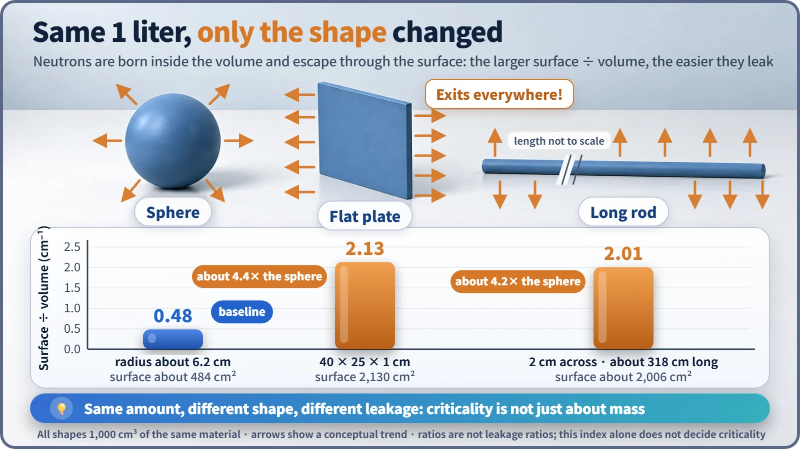
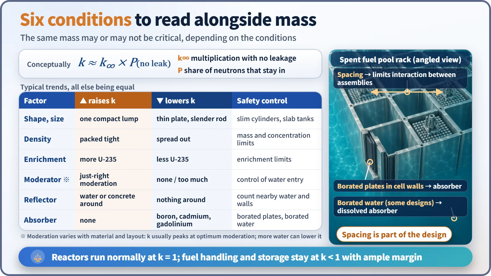

Nuclear Reactions & Fission · 035
A Big Crowd Alone Won't Start the Wave — The Misunderstanding Behind "Critical Mass"
Critical mass is a threshold with conditions attached, not an amount at which material explodes.

Critical mass is not one fixed number at which material "blows up." It is the minimum amount of fissile material needed for a chain reaction to sustain itself (k = 1) under specified conditions, and it changes greatly with shape, density, enrichment, moderator, reflector and absorber. [1]
The stadium wave: is a big crowd enough?
At a ballpark, one person jumps up, the next follows, and "the wave" sweeps around the stands. But 20,000 fans don't guarantee it keeps going. Lots of empty seats break it off partway; a single long row lets it die at the end of the row; fans of the other team who won't stand up stop it too. A somewhat smaller crowd packed tightly in a ring, on the other hand, keeps it rolling.
Critical mass is exactly this kind of idea. In movies, "We've reached critical mass!" means something is about to blow up, but the real meaning comes with far more conditions attached.
A number loaded with conditions
A chain reaction is critical when each generation of neutrons leaves exactly as many neutrons for the next, so the reaction holds steady; in terms of the effective multiplication factor k, that is k = 1. Critical mass is the minimum amount of fissile material needed for k = 1 under specified conditions. Change the conditions and the critical mass of the very same material changes dramatically: it is not a constant that pops out as soon as you name the material.
Neutrons stand at a three-way fork
A neutron born from fission can cause the next fission, be captured without causing fission (absorption), or escape from the material altogether (leakage). In one line:
k = k∞ × P (the probability of not leaking out)
k∞ ("k-infinity") is the material's ability to multiply neutrons if it were infinitely large with nowhere to escape, set by what the material is made of. The probability of not leaking is set by size, shape and surroundings. However good the material, if neutrons keep leaking away, k falls short of 1. [2]
Same liter, just a different shape
Neutrons are born inside the volume and escape through the surface, so the larger the surface-to-volume ratio, the more chances they tend to have to leak.

| Shape (1,000 cm³) | Dimensions | Surface area | Surface ÷ volume |
|---|---|---|---|
| Sphere | radius about 6.2 cm | about 484 cm² | about 0.48 cm⁻¹ |
| Flat plate | 40 × 25 × 1 cm | 2,130 cm² | 2.13 cm⁻¹ |
| Long rod | 2 cm across, about 318 cm long | about 2,006 cm² | 2.01 cm⁻¹ |
The plate and rod are more than four times as "leaky" as the sphere: the difference between a crowd packed in a ring and one strung out in a single row. Real leakage also depends on how the object's size compares with the distance neutrons travel, but the conclusion stands: the same amount can be critical or not depending on its shape.
Besides shape, five more knobs
Density: packing the same amount more tightly raises k; spreading it out generally lowers it. Enrichment: the share of easily split uranium-235. Natural uranium is only about 0.7%, so a lump of it on its own can never go critical, however much is piled up. Moderator: water or graphite slows neutrons so they cause fission more readily; it is essential for low-enriched fuel, but too much water lowers k again because hydrogen absorbs neutrons. Reflector: surrounding material, even water or concrete, that bounces escaping neutrons back. Absorber: materials such as boron or cadmium that swallow neutrons, the stadium's fans who won't stand up.

Reactors on purpose; fuel plants never
Commercial reactors don't reach criticality with a "heavy lump." They form low-enriched fuel, about 3 to 5% uranium-235, into tens of thousands of slender rods standing at regular spacing with water in between. The core of a 1-million-kilowatt pressurized water reactor, for example, is a cylinder a little over 4 m tall and 3 m across, designed so that k = 1 is reached only when size, arrangement and moderator all line up. That critical state is everyday operation.
Outside reactors, in fuel fabrication plants and storage facilities, criticality safety makes sure criticality never happens: narrow cylindrical or thin slab containers, caps on the amount handled at once, spacing in storage racks, and boron-containing plates or borated water. Facilities are designed so that criticality becomes possible only if at least two independent abnormal conditions occur at the same time. [3]
The 1999 accident at a uranium processing facility in Tokaimura, Japan, shows what happens when this principle breaks down. Workers bypassed the prescribed route and quantity limits and poured uranium solution all at once into a precipitation tank surrounded by a cooling-water jacket. There was no explosion, but the chain reaction continued for about 20 hours and stopped only after the jacket water (a reflector) was drained and boric acid (an absorber) was added. Two workers died from severe radiation exposure. [4] [5]
Key takeaways
Critical mass is a threshold, not a trigger: the point at which a chain reaction starts to sustain itself, set jointly by shape, density, enrichment, moderator, reflector and absorber. Reactors work quietly at this threshold every day, and the low-enriched fuel of commercial reactors cannot produce a nuclear explosion. The analogy has limits, since neutrons fly in every direction and react by chance, but the instinct that arrangement matters more than headcount is worth keeping.